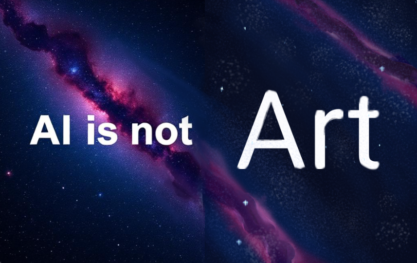

Real creativity takes time and practice. When you try to draw or write, it is hard. You make mistakes. But those mistakes help you learn and find your own unique style.
Artificial intelligence makes everything too easy. All you need to do is write a few words, and an image pops up.
This is causing us to forget who we really are, and what we can actually create. Even a simple stickman has more emotion than AI art.
When millions of people use the same few AI models to generate ideas, our collective visual language shrinks.
AI operates on averages, predictability, and consensus. It gives you the most statistically likely response to your prompt.
The result is a world full of the same repetive patterns of style. Websites look the same, concept art looks identical, and writing loses its quirky, human touch.
When inspiration hits out of nowhere, it feels amazing. When we ask AI for inspiration, it's like an empty thought.
Art is a physical experience. It is the texture of thick paint on a canvas, the smell of charcoal, or the resistance of paper under a pencil. AI turns all of art into a flat, glossy arrangement of pixels on a cold glass screen.
(Not trying to exclude digital art here that is art too)
Being an artist changes how you look at everyday life. You start falling in love with little details, like a cool shadow on the sidewalk or a specific expression on a face. AI can't fall in love with the details. It just steals a pattern, and spits it back out.
Check out the image at the bottom of this page. Half genarated with Artificial intelligence, half created with me and a drawing app.
One side looks regular, and while the other side has imperfections, it has charm.
